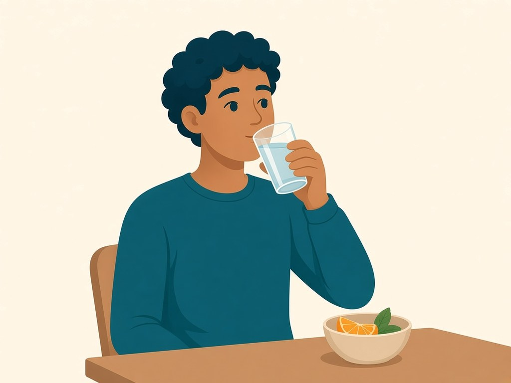

Meditations and breathing
Breathe along with the circle: it grows as you breathe in and shrinks as you breathe out. Then try a short guided meditation.
Breathing guide
Slow out-breath: In for 4, out for 6. No hold. The gentlest of the three.
- In for 4: Nose or mouth, whichever is easier.
- Out for 6: Let the out-breath take its time.
Box breathing: A steady 4-4-4-4 count. In, hold, out, hold. Stop whenever you want.
- Breathe in: In through the nose for 4. Soft shoulders.
- Hold: Rest at the top for 4. No forcing.
- Breathe out: Out for 4, like fogging a window slowly.
- Hold empty: A short pause for 4, then begin again.
4-7-8 breathing: In for 4, hold for 7, out for 8. A longer out-breath.
- In for 4: A quiet inhale. Jaw loose.
- Hold for 7: Stillness. If this is too long, stop and breathe normally.
- Out for 8: A slow out-breath, longer than the in-breath.
Stop whenever you want. Press Stop or Esc to end.
Breath holds
Skip breath holds if you have heart, lung or blood pressure conditions, or are pregnant.
This choice is kept only in this browser (local storage).
Breathing practices
Breath holds are hidden in this browser, so box breathing and 4-7-8 breathing are left out. Use the setting on the breathing page to change this.

Slow out-breath
In for 4, out for 6. No hold. The gentlest of the three.
Box breathing
A steady 4-4-4-4 count. In, hold, out, hold. Stop whenever you want.
4-7-8 breathing
In for 4, hold for 7, out for 8. A longer out-breath.
Meditations
Each meditation is a few short steps. Eyes can stay open. Stop if you feel unwell.

Urge surfing
A short guided sit with the wave of an urge.

Body scan
Opt-in. A short attention walk from feet upward.

Breathing anchor
Five easy out-breaths with the room still in view.

Mindful walking
A slow walk where you notice your feet, breath and surroundings.

Mindful eating
Slow down one snack or meal and notice it with your senses.
If focusing inward brings up distressing memories, open your eyes, ground yourself, and talk to your doctor or counselor. For any health concern, talk to your doctor. HomeCircle is support, not medical care.